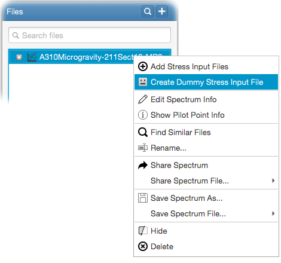

Dummy stress input files (STFs) are useful for the validation of spectrum files. Dummy STF files contain
fictitious stress values given by the user versus the already existing loadcase numbers obtained from the TXT file. To generate
a dummy STF file, right-click on a spectrum and choose - Create Dummy Stress Input File
from the menu as follows;

Enter the name of file and choose stress state. One dimensional stress state will require only one stress value for each
loadcase, whereas two dimensional state will require normal-x, normal-y and shear-xy stress values.
Here, you can enter the constant stress values for 1g, incremental, delta-p and delta-t loadcases.